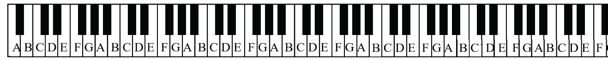
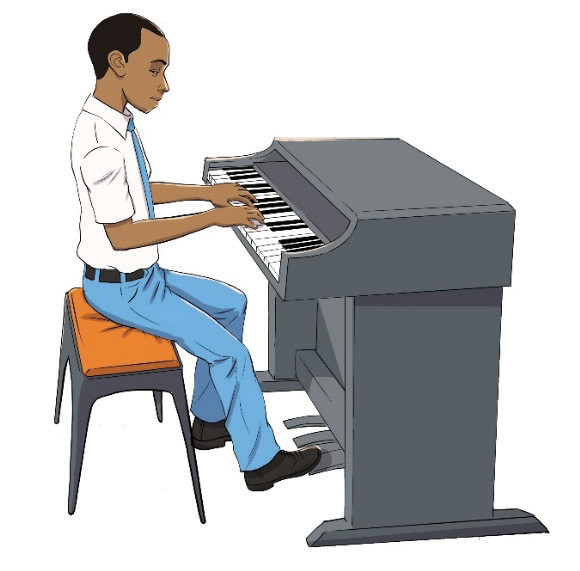

Middle C

Piano playing postures
Having the correct posture is very important when playing the piano. It helps the pianist play comfortably and avoid injury or tiredness. The following are some guidelines for a correct posture when playing a piano:
Positioning at the middle of the piano, that is, in front of middle C. This will also depend on the piece of music being played. If the musical piece uses only the upper or lower part of the piano, the player should adjust the sitting position to the required part of the piano.
Sitting on the front half of the seat. This posture enables the player to easily move the feet when playing the piano pedals.
Releasing and relaxing the feet while keeping them horizontal on the ground from the heel to toe, and ready to move when using the pedals.
Releasing and relaxing the shoulders and arms.
Keeping the back straight.
Playing the piano while placing the fingers in a curved position to make it easier to press the keys smoothly.
Figures 6.6 and 6.7 show the correct and wrong postures, respectively, while playing piano.
